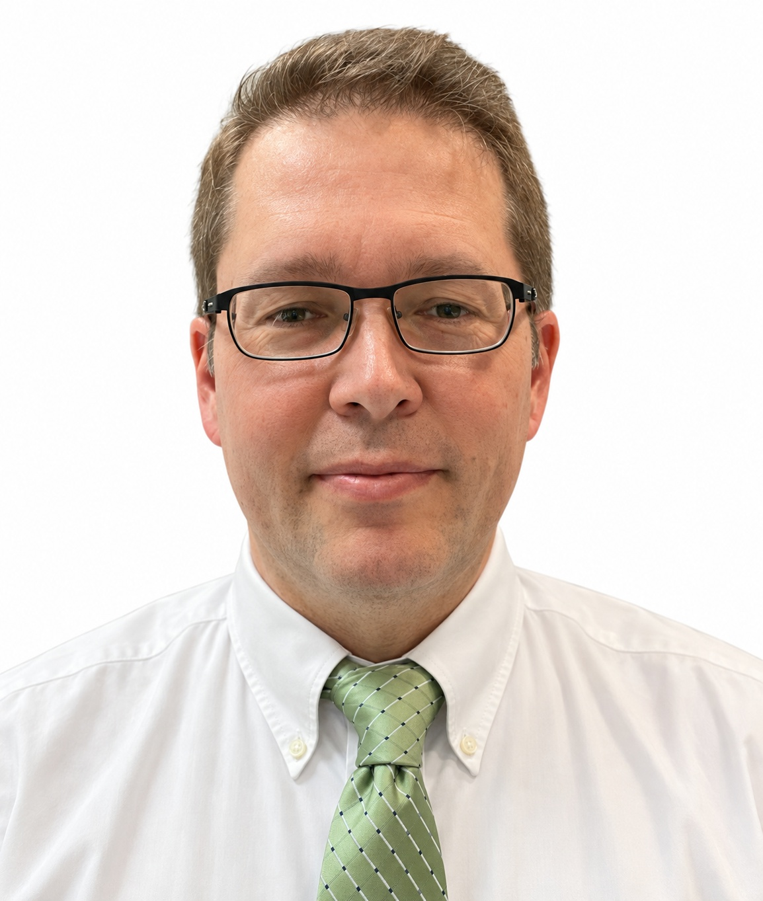

Meet the principal
P. Douglas Yoder, Ph.D.
Semiconductor expertise.
An independent consultant with a career spanning semiconductor research, industrial R&D, and university teaching.

Background
A career built around understanding devices.
Dr. Yoder is an Associate Professor in the School of Electrical and Computer Engineering at the Georgia Institute of Technology.
His work connects microscopic physical processes to the behavior of semiconductor structures and devices, using numerical modeling to understand performance and inform design.
Before joining Georgia Tech in 2003, he held research positions at the Swiss Federal Institute of Technology, Bell Laboratories, and Agere Systems.
Through QuantumForge, he offers technical consulting, professional instruction, and independent technical support for legal matters.
View academic curriculum vitaeQualifications
Education & professional experience.
Education
- Ph.D., 1993
- University of Illinois at Urbana-Champaign
- M.S., 1991
- University of Illinois at Urbana-Champaign
- B.S.E.E., 1990
- Cornell University · highest honors
Professional experience
- Georgia Institute of Technology
- Associate Professor · 2003–present
- Agere Systems
- Member of Technical Staff · 2001–2003
- Bell Laboratories, Lucent Technologies
- Member of Technical Staff · 1999–2001
- Swiss Federal Institute of Technology
- Member of Technical Staff · 1993–1999
Professional contributions
Research, teaching, and scientific leadership.
Published research
Work spanning semiconductor transport, numerical modeling, photodetectors, and III-nitride photonics.
Selected publicationsProfessional recognition
Senior Member, IEEE, since 2005. U.S. Air Force Summer Faculty Fellowship, 2009.
Conference leadership
Chair, ICSNN 2014; co-chair, NUSOD 2010; topical program chair, IWN 2024.
Engagement inquiries
Discuss your needs with Dr. Yoder.
Consulting, professional seminars, and independent technical analysis.